DoctorCar
Your car always in order
User guide
Every feature, explained with screenshots of the app
App version {{VERSIONE}} · guide updated on {{DATA}}
DoctorCar was designed in Italy: some rules (MOT, road tax, insurance grace period) follow Italian law. Where they differ in your country, just write your own dates.
DoctorCar is your car's maintenance log on your phone. It keeps track of jobs (services, brakes, tyres…), due dates (MOT, road tax, insurance, driving licence…), fill-ups with real consumption and all expenses. It reminds you before something is due and remembers where you parked.
It works without internet: your data stays on your phone, with no account and no cloud. If your family uses several phones, DoctorCar keeps them in sync by itself on your home Wi‑Fi. It's in English and Italian, and it also exists as a page to open on a computer.
| Section | What you find | Chapter |
|---|---|---|
| Home | The summary: what to do now, alerts, parking, search | 4 |
| Jobs | The log of everything done to the car | 5 |
| Due dates | Service, MOT, road tax, insurance, documents | 6 |
| Fuel | Fill-ups, consumption, cost of a trip | 9 and 10 |
| Expenses | What you spend, monthly budget, forecast | 11 |
| Vehicles | Your cars, each one's details, the parts stock | 3 and 8 |
| Settings (gear at the top) | Appearance, language, reminders, security, data, updates | 17 |
DoctorCar for Android is a free download from GitHub, on the page of published versions: github.com/CrsLabs/DoctorCar/releases. You need Android 10 or newer.

Once a week DoctorCar checks whether there's a new version. If there is, it shows «DoctorCar … is out» with what's new and the buttons Update and Later. With Update the app downloads the new version and Android asks you to confirm: all your data stays.
In Settings → Updates you can turn off the weekly check or tap Check now.
On first start DoctorCar suggests Add your car. You can add as many as you like (cars, motorbikes, vans) from the Vehicles section.
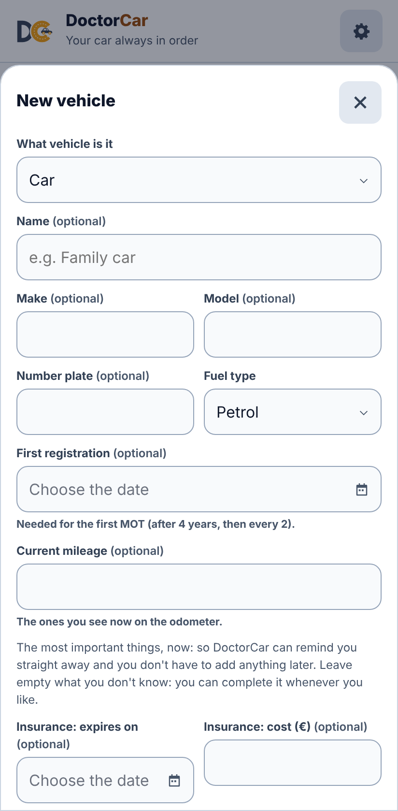
For each vehicle: name, make, model, number plate (always upper case), fuel type, first registration and current mileage. Everything is optional except the type.
In the same window write the important things straight away: insurance (expiry and cost), road tax, last MOT, last service and whether you use winter tyres. This way the due dates are complete from the start.
For a new car DoctorCar suggests a basic maintenance plan (service, filters, brakes, timing belt…) with the recommended intervals.
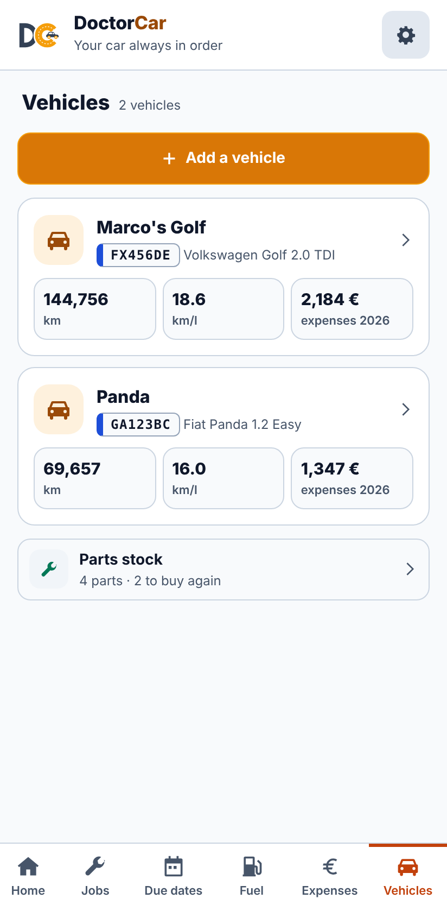

Tapping a vehicle opens its details: current mileage, km a year, average consumption, recorded expenses, the consumption chart (unusual fill-ups in red), the tyres, the things for the mechanic, the parts in the garage, due dates and latest jobs.
From the details: Job, Due date, Set of tyres, Quick checks, Part, Log as PDF, For the workshop, Edit vehicle, Delete vehicle.

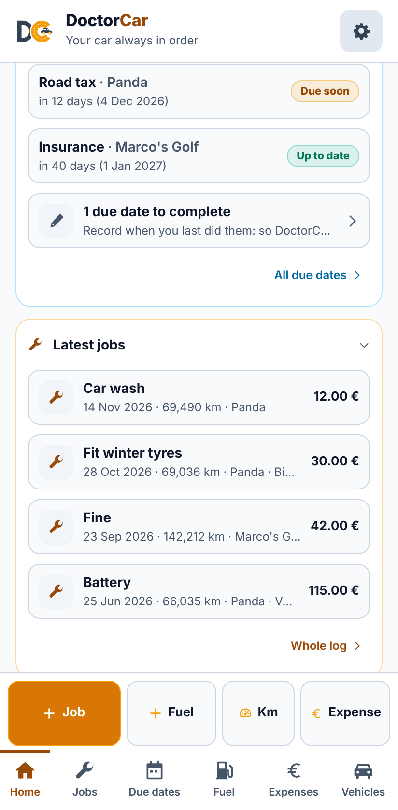
At the top there's the search and three at a glance boxes: upcoming due dates, how much you spent this month against the budget, your vehicles. Tapping them opens the section.
Then one suggested action (for example «Complete a due date»), the parking, the To check block when something doesn't add up (mileage lower than before, unusual consumption, budget exceeded, parts to buy again, old backup), the upcoming due dates, the latest jobs and your cars.
At the bottom, only on Home, the bar + Job · + Fuel · Km · Expense; below it, the sections of the app.
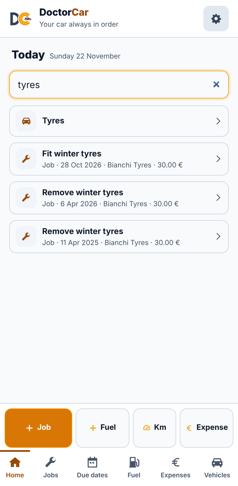
Type what you need in your own words: «tyres», «road tax», «backup», «fine», «dark theme», the number plate or a workshop's name. You find features, settings, cars, due dates and jobs; one tap takes you there.
No need for the whole word: «insur» finds insurance. You can search in English or Italian.

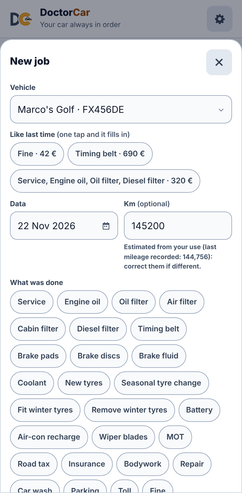
The log collects everything done to the car, grouped by year, with search (workshop, item, description) and filters by vehicle and by person.
A job has: vehicle, date, mileage, what was done (even several items at once: service, oil, filters, brakes, tyres, battery, MOT, road tax…), workshop, cost and notes.
Fewer taps: the mileage is already estimated from your use of the car, last time's workshop and cost are suggested, and «Like last time» fills in everything with one tap.
Each job can have up to 12 photos: invoice, receipt, quote. Tap Take photo or Choose photo. Photos are reduced, stay on the phone, can be viewed full screen with zoom and travel (encrypted) to your other connected phones and into the backup.

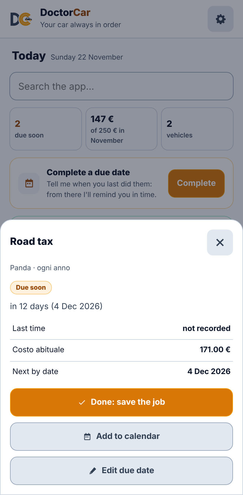
Due dates are by date, by mileage or both («whichever comes first»). Each one has a colour: overdue, due soon (within 30 days or 1,000 km), up to date, to complete (the last time is missing).
With the mileage updated now and then, DoctorCar estimates the date of mileage-based due dates too.
From a due date: Done: save the job (opens the job already filled in), Edit due date, Add to calendar.
At the top of Due dates, with one tap add: driving licence, fuel card, toll tag (yours) and warranty, restricted-zone permit (the car's). When you mark them as done, DoctorCar asks for the new date. A fine to pay becomes a one-off due date (chapter 11).
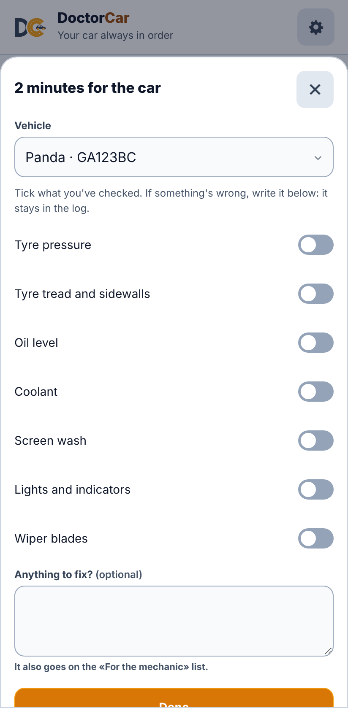
Tyre history: summer, winter or all-season sets, with size, brand and DOT (week and year of manufacture). Mileage is counted by itself, age comes from the DOT and DoctorCar warns you after 6 years or the recommended mileage.
When you record the seasonal change («Fit winter tyres», «Remove winter tyres») the tyres swap by themselves: the fitted ones go to the garage and vice versa.
Quick checks (pressure, tread, oil, coolant, screen wash, lights, wipers) take 2 minutes, once a month: with reminders on, DoctorCar reminds you on the 15th and you answer «All good» from the notification. What you write in «Anything to fix?» goes on the mechanic's list.
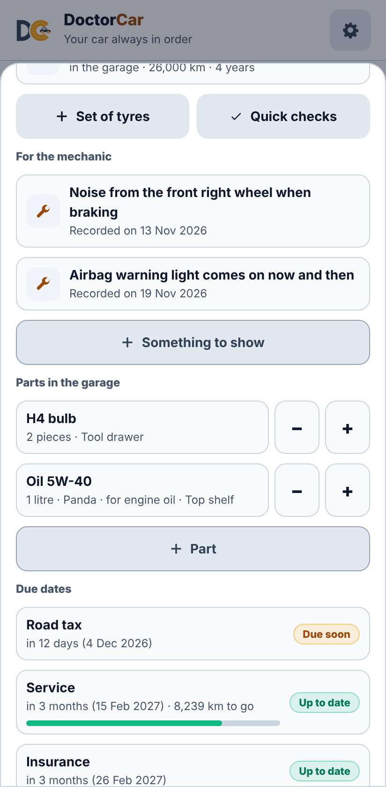
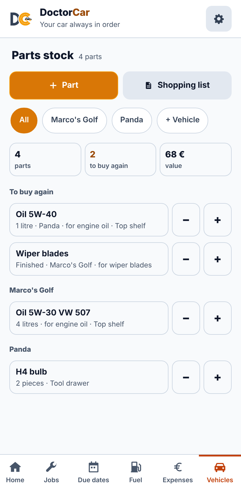
For the mechanic: in the car's details note a noise, a warning light, something odd with «Something to show». The list goes into the For the workshop sheet, so the mechanic gets it together with the car's history. Tap a line to mark it «Fixed» or remove it.
Parts in the garage: each part (oil, bulbs, wiper blades…) belongs to a car. Choose the unit (pieces, litres, kg, pairs, bottles…), update the quantity with − and + and, if you fill in «Remind me when there are only», To buy again appears under that number together with an alert on Home. You can also record the price per unit and where it is.
Parts stock (in Vehicles): all parts together, filtered by car, with how many need buying again and what they're worth. Shopping list prepares the text with what's missing, to send or copy.

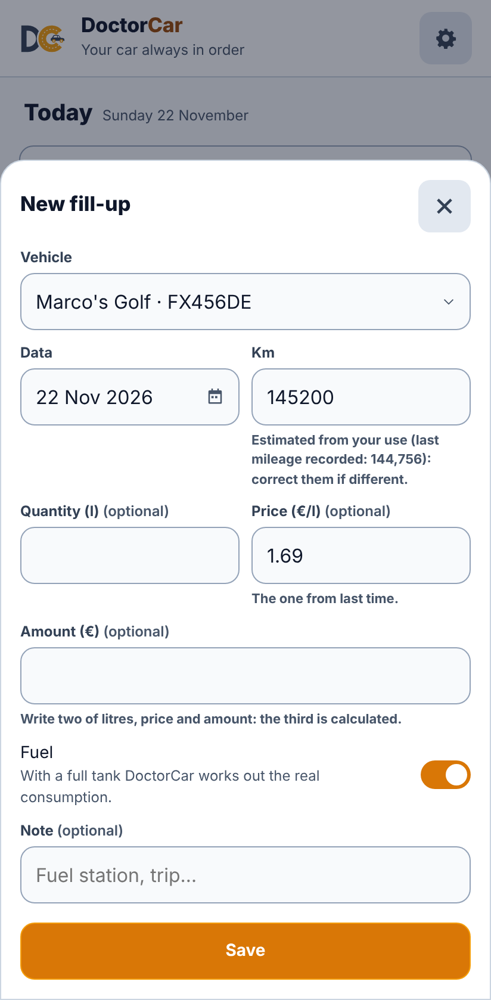
Each fill-up has date, mileage, quantity (litres, kWh or kg), price, amount and «full tank». Of litres, price per litre and amount you write two: the third is calculated. The last fill-up's price is already suggested.
Between two full tanks DoctorCar works out the real consumption and the average price. Fill-ups with much worse consumption than usual are flagged.
Update mileage (or «Km» on Home) records the mileage without filling up: it keeps the due date estimates right.

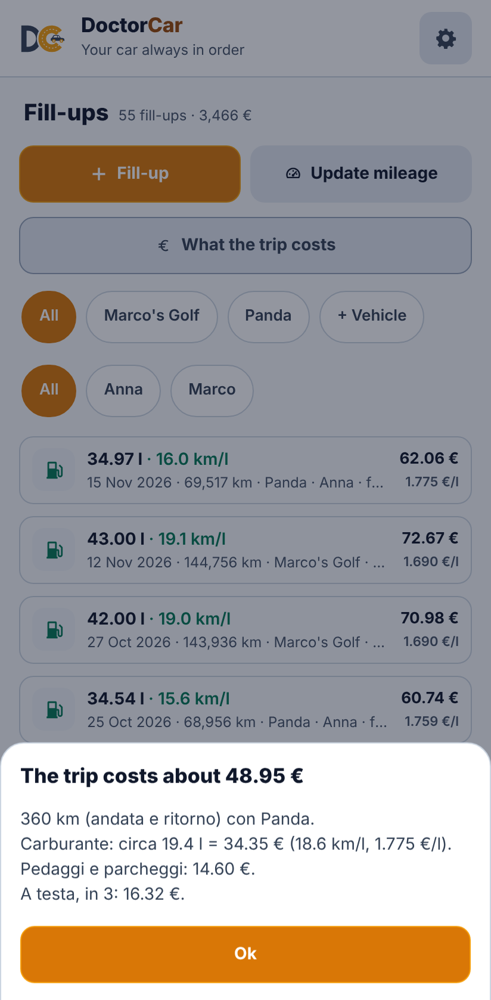
In Fuel tap What the trip costs (or search «trip»). Write the distance, how many people, whether it's a return trip and the tolls.
The consumption is already filled in from your fill-ups; with «How you measure consumption» choose between km per litre (km/l) and litres per 100 km (l/100 km): the number converts by itself and the choice is kept for next time. The price is the last fill-up's, unless you write another.
DoctorCar answers with the total, the litres and what each person pays.


The Expenses section shows the year's total, the cost per kilometre and the month-by-month chart: maintenance, fuel, road tax/insurance/MOT, other. You can filter by vehicle and by year.
The monthly budget (Set the budget) shows what you've spent, the estimate at the end of the month and warns you if you go over.
The forecast for the next 12 months adds up upcoming due dates (with last time's cost) and fuel.
Expense on Home records a toll, parking, car wash or fine on the spot: if it isn't paid yet it becomes a reminder within 5 days with the 30% discount already worked out (Italian rule).
Tap I parked here on Home: the «Where you are» screen shows address, accuracy and coordinates. Update location looks for a more precise reading for a few seconds and keeps it only if it's better; See on map checks it. You can add a note (level, pillar, street).
Then on Home: Take me there opens the maps, Timed parking reminds you 10 minutes before and when the parking expires, I've picked up the car closes it all.
If the phone's location is off, DoctorCar offers to turn it on; if permission was denied, it explains how to grant it. The point stays only on your phone.
In the Android app, DoctorCar sends notifications before service, MOT, road tax, insurance and the other due dates, even with the app closed and after the phone restarts.
DoctorCar asks only once whether you want reminders; from Settings → Reminders you can change or turn them off. Notifications, buttons and widget speak the same language as the app.
In the Android app your data can be the same on several phones and tablets (for example yours and your family's). The phones talk directly on the same Wi‑Fi, over an encrypted connection, with no cloud and no account.
From Sync you see the connected devices and can Sync now, Forget a phone (lost or sold) or Disconnect this one.
The full privacy policy is in the PRIVACY.md file at github.com/CrsLabs/DoctorCar.
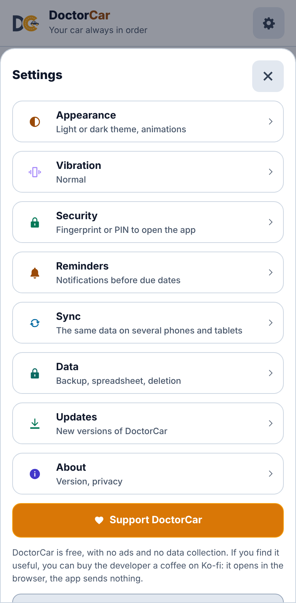

Settings open with the gear at the top right. Each group opens and closes with a tap.
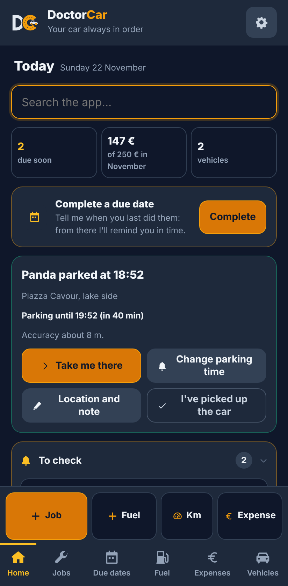
With the Automatic theme DoctorCar follows the phone, even while it's open. The bar at the top with the clock takes the app's colour, so it's always readable.
«Automatic» language uses English if the phone is in English, Italian otherwise. Dates and numbers follow the chosen language (e.g. «22 Nov 2026», «1,234.50 €»).
| What happens | What to do |
|---|---|
| Reminders don't arrive | Settings → Reminders: check they're on; if Android blocked them, tap «Open Android settings» and allow notifications. Remove DoctorCar from battery saving. |
| A due date says «To complete» | The last time is missing: tap it and write when you did it (or record the job). |
| The estimated date of a mileage-based due date looks odd | Update the mileage now and then («Km» on Home): the estimate uses readings taken on different dates. |
| On Home «mileage lower than before» | You wrote a wrong number: open the last fill-up or job and correct the mileage. |
| Two phones don't sync | Same Wi‑Fi (not the guest one), app open on both, then «Sync now». |
| The parking location isn't found | Turn on the phone's location and give DoctorCar permission; outdoors it's more precise. |
| The backup won't open | Check the password (upper and lower case matter). |
| «Check now» finds no updates | If you already have the latest version, that's right; otherwise check you're connected to the internet. |
| Android won't install the update | The first time, allow DoctorCar to «install unknown apps», then tap Update again. |
| Something else is wrong, or you have an idea | Settings → Report a problem or an idea (chapter 19). |

At the bottom of Settings tap Report a problem or an idea. Choose whether it's a problem or an idea, write in a few words what happened or what you'd like, and tap Send by email: the email is already addressed to crslabs.info@gmail.com and goes only when you send it.
The technical information (version, phone, section, latest errors) helps understand the problem: no number plates, names, amounts or photos. With «See everything that is sent» you check it first, and you can remove it. Writing in English is fine.
DoctorCar is free, with no ads and no data collection. If you find it useful you can buy the developer a coffee: Support DoctorCar opens ko-fi.com/crslabs in the browser.
DoctorCar is free software (GPL‑3.0 licence): the code is at github.com/CrsLabs/DoctorCar.
| Version | What's new |
|---|---|
| 2.4.6 | Notifications appear at the bottom, above the bar, and close by swiping them. |
| 2.4 | App in English too (the language changes straight away), automatic updates from GitHub, trip consumption in km/l or l/100 km, choice of unit for parts, «Report a problem or an idea» to crslabs.info@gmail.com, «Support DoctorCar», theme that changes instantly with the top bar always readable. |
| 2.3 | «For the mechanic» list (also in the workshop sheet), parts in the garage for each car with «To buy again», parts stock with shopping list, «While you're at it» after a job, what a trip costs. |
| 2.2 | Reorganised Home: search across the whole app, at-a-glance boxes, «To check». More precise parking. Reporting problems and ideas. |
| 2.1 | Suggested road tax, insurance grace period, MOT at the end of the month, documents and permits, quick checks, consumption chart, tyre history with automatic swap, budget, quick expenses and fines with discount, where I parked and timed parking. |
| 2.0 | Fewer taps (ready values, «Like last time», litres/price/amount), suggested action and alerts on Home, expense forecast, buttons in notifications, shortcuts and widget, calendar, import from other apps, PDF log and workshop sheet, automatic backup, «who». |
| 1.3 | Fingerprint or PIN access. |
| 1.2 | Opening with the logo, text size, screen smoothness, adjustable vibration. |
| 1.1 | Invoice photos, due date reminders. |
| 1.0 | Vehicles, jobs, due dates, fill-ups, expenses, encrypted backup, sync between phones. |